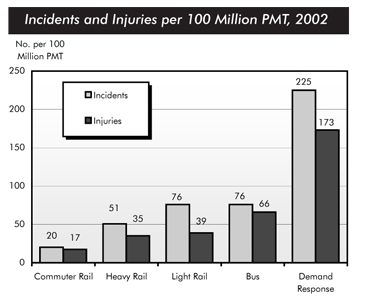

You should spend about 20 minutes on this task.
The chart below shows numbers of incidents and injuries per 100 million passenger miles travelled (PMT) by transportation type in 2002.
Summarise the information by selecting and reporting the main features and make comparisons where relevant.
Write at least 150 words.

The bar chart compares the number of incidents and injuries for every 100 million passenger miles travelled on five different types of public transport in 2002.
It is clear that the most incidents and injuries took place on demand-response vehicles. By contrast, commuter rail services recorded by far the lowest figures.
A total of 225 incidents and 173 injuries, per 100 million passenger miles travelled, took place on demand-response transport services. These figures were nearly three times as high as those for the second highest category, bus services. There were 76 incidents and 66 people were injured on buses.
Rail services experienced fewer problems. The number of incidents on light rail trains equalled the figure recorded for buses, but there were significantly fewer injuries, at only 39. Heavy rail services saw lower numbers of such events than light rail services, but commuter rail passengers were even less likely to experience problems. In fact, only 20 incidents and 17 injuries occurred on commuter trains.
(165 words, band 9)
You should spend about 40 minutes on this task.
In many parts of the world today there is a profitable market for products which lighten or whiten people’s skin.
Outline the reasons for using such products and discuss what effects they have in terms of health and society.
Give reasons for your answer and include any relevant examples from your own knowledge or experience.
Write at least 250 words.
In many countries, particularly places like Asia, skin whitening products are incredibly popular and provide huge profits for the companies involved in their sale. This essay will examine the reasons why people use these products and the effects this has on people’s health and on society.
The principal reason that people use skin whitening products is because whiter skin is seen to be more desirable than darker skin. To understand why, we need to firstly look at history. In ancient times, those people of a higher status tended to stay indoors, whilst people of a lower status worked outside, usually farming. As a result, those people who were indoors had much lighter skin, which means that whiter skin is now associated with having a higher status than dark skin. Another reason, which is partly related to this, is the desire for the ‘Western’ look. For example, plastic surgery to create western eyelids and noses is common in Asia, and the white skin is part of this. These beliefs and images are also perpetuated in the media, with adverts showing people with white skin as more successful and attractive.
However, despite the fact that having whiter skin may improve a person’s self-esteem, these products can have negative effects. Regarding health, there are reports that people are harming their skin permanently as some products bought over the counter have prescription-strength ingredients. For instance, some contain steroids or toxins which can severely damage the skin and other parts of the body. In terms of society, there are also detrimental effects. Such behaviour perpetuates the belief that ‘white’ is better than ‘black’, and thus those with darker skin may experience discrimination.
In conclusion, people use whitening products due to the fact that white skin, usually through the media, is portrayed as more desirable. However, steps should be taken to change this image as the drawbacks of this are clear, with potentially dangerous consequences for people’s future health and society as a whole.
(328 Words)